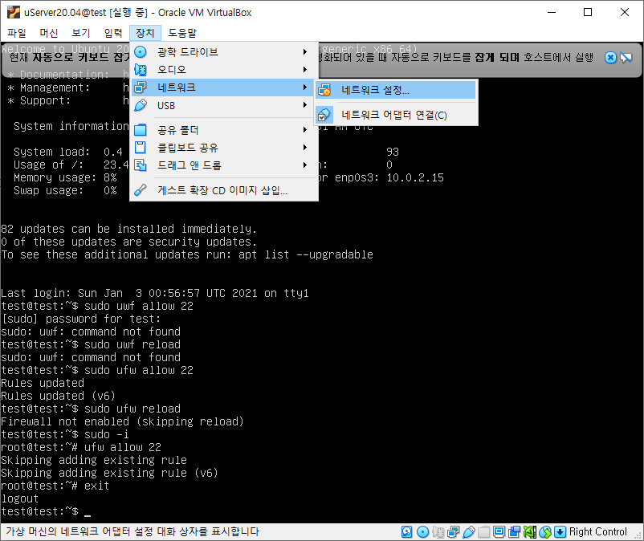
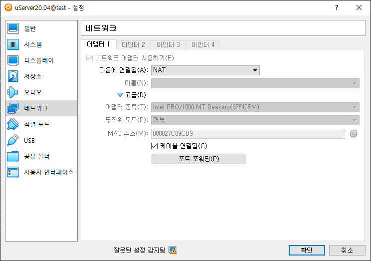
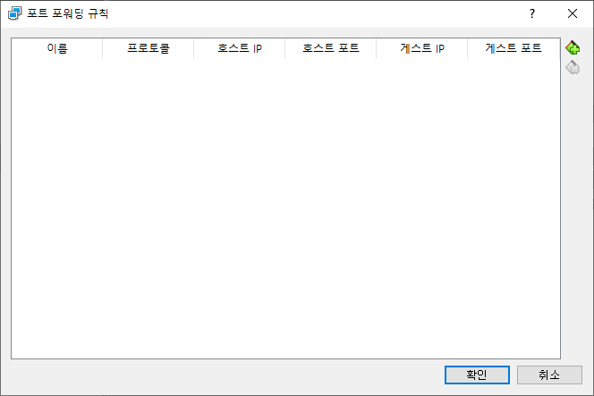
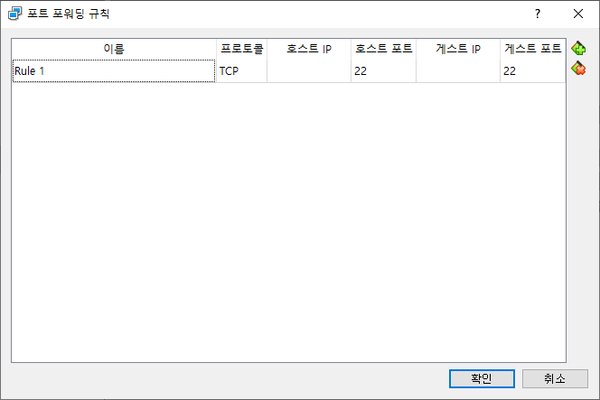
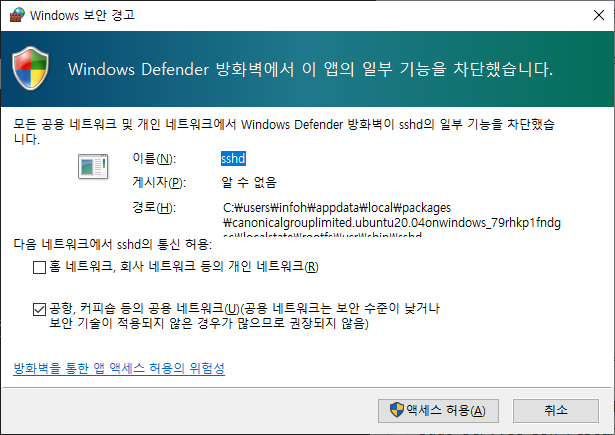
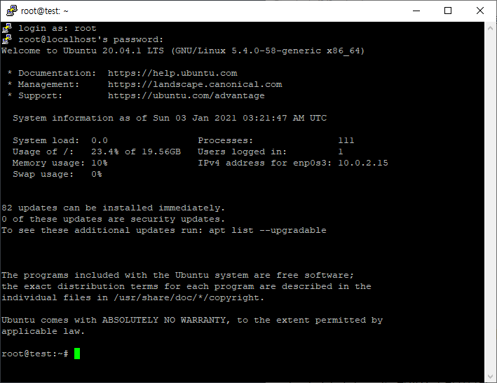

SSH 설치하기
01.방화벽 설정
01.1 포트 접속 허용
22번 포트로 ssh를 접속하기 위해서는 방화벽을 허용해 주어야 합니다.
$sudo ufw allow 22
포트 접속을 허용하였다면 방화벽을 다시 로드 합니다.
$ ufw reload
01.2 포트 포워딩 설정
VirtualBox와 같은 가상환경을 사용하는 경우 추가로 포트 포워딩 설정이 필요 합니다. VirtualBox에서 [장치]>[네트워크]>[네트워크설정] 을 클릭합니다.

네트워크 설정창이 표시됩니다. 중간에 있는 [고급] 화살표 버튼을 클릭하여 설정을 확장합니다.

[포트 포워딩]을 선택합니다. 오른쪽에 있는 [+] 버튼을 선택합니다.

새로운 포트 포워딩 rule을 추가 합니다. 로컬의 22번 포트를 VirtualBox의 22번 포트로 포워딩을 통하여 접근을 연결합니다.

02.OpenSSH 설치하기
SSH로 서버에 접속을 하기 위해서는 openssh 서버를 설치해 주어야 합니다.
02.1 준비작업
update는 새로운 버젼의 패키지들이 있는지 확인을 합니다.
$ sudo apt update
갱신 최신 패키지 목록을 통하여 각각의 패키지들의 버젼을 업그레이드 해 줍니다.
$ sudo apt upgrade
update는 패키지의 목록을 갱신하는 것이고, upgrade는 갱신된 목록에 따라 설치된 패키지를 업그레이드 하는 동작입니다.
02.2 SSH 재설치
만일 기존에 SSH서버가 설치가 되었다면, 충돌을 방지하기 위해서 완전삭제(purge) 합니다.
$ sudo apt purge openssh-server
openssh-server를 설치 합니다.
$ sudo apt install openssh-server
02.3 재시작
SSH 서버를 완전 재시작 해 준다.
$ sudo service ssh --full-restart
$ sudo service ssh restart
또는
$sudo systemctl restart ssh
02.4 방화벽 허용
만일 WSL 과 같은 환경에서 실행하는 경우 windows defender가 실행이 됩니다. 방화벽을 허용해 줍니다.

03.root 접속 허용
기본적으로 리눅스 배포폰은 root 접속을 허용하지 않습니다. 보안상 root 접속을 허용하는 것은 좋지 않다. 하지만, 내부 개발용으로 사용시 편의를 의해서 root를 허용하고자 할때 다음과 같이 하면 된다.
03.1 설정파일 수정
/etc/ssh/sshd_config 파일을 수정합니다. vi를 통하여 수정합니다.
$ sudo vi /etc/ssh/sshd_config
vi 에디터가 실행됩니다. esc+i를 선택하여 입력 모드로 전환합니다. 그리고, 다음과 같은 라인을 찾아서 수정합니다.
#PermitRootLogin prohibit-password
PermitRootLogin yes
설정부분에서 PermitRootLogin 주석을 제거해 주거나, 아래에 다시 작성을 합니다. prohibit-password 대신에 yes를 적어 줍니다.
esc+:wq를 입력하여 저장후 종료합니다.
03.2 ssh 재시작
ssh 서버를 재시작 합니다.
$ sudo systemctl restart sshd
03.3 루트 암호 변경하기
기본적으로 루트의 암호는 Ubuntu 20.04에 설정되어 있지 않으며 Permission denied라는 오류 메시지가 나타납니다.
루트 사용자로 SSH 로그인을 시도하면 다시 시도하십시오. 이러한 이유로 우리는 루트의 암호를 설정해야합니다. 프롬프트가 표시되면 현재 사용자 비밀번호와 새 루트 비밀번호를 입력하십시오.
$ sudo passwd
[sudo] password for linuxconfig:
Enter new UNIX password:
Retype new UNIX password:
passwd: password updated successfully
03.4 root로 putty 접속해 보기
putty를 다시 실행합니다. 로그인 창에서 아이디를 root로 입력합니다.

루트로 SSH가 접속된 것을 확인할 수 있습니다.